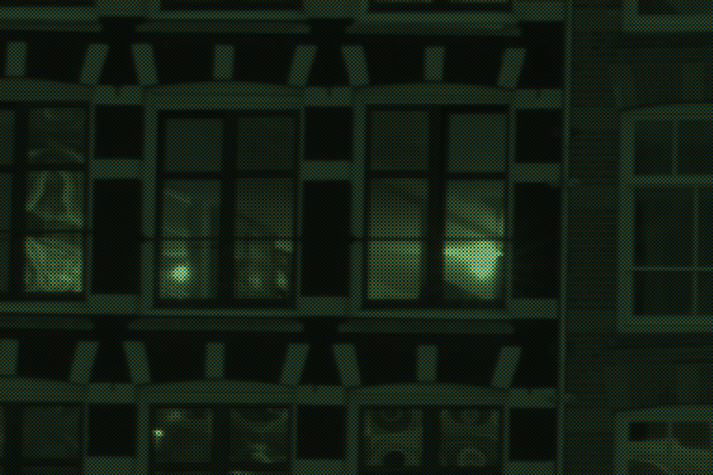
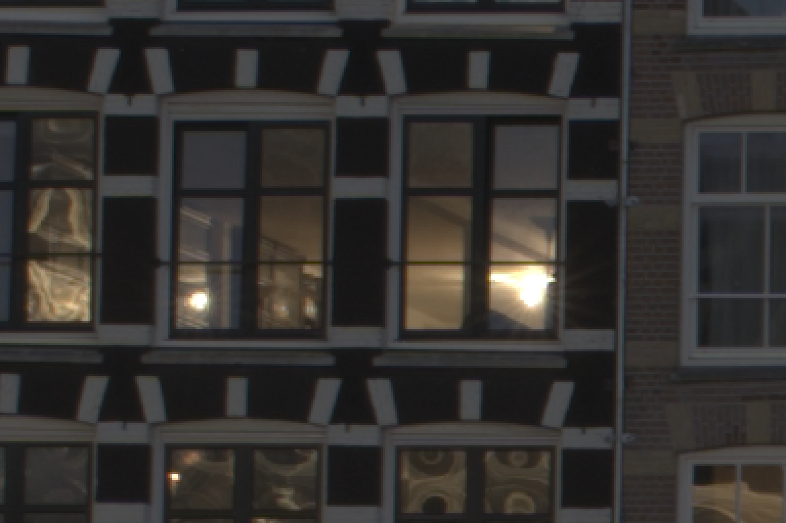

从运河边的光，到 RAW 文件里的一串数字，再到你看到的照片。
太阳落下二十分钟，天空还剩一层蓝，运河边的窗户已经亮起来。
20 mm，f/8，ISO 100。光线太暗，要靠长曝光把它攒够，手持做不到。
快门打开 13 秒。这 13 秒里落进镜头的光，都会被记下来。
镜头把场景投射到相机深处的一块芯片上。
约 3270 万个。每一个只有几微米宽，只做一件事：数光。
最上面是微透镜，把光聚进去；下面是滤色片，按 2×2 排列：一红、两绿、一蓝。
落进来的光越多，感光点里攒下的电荷越多。柱子的高度是这张照片里 8 × 8 个感光点的真实读数。
一整行同时读出，模数转换器把电荷量化成 0 – 16383 的 14 位整数。读完的感光点清零，等下一张。
一张表，只有数字。这就是相机写进 ARW 文件的东西。
是一张马赛克。每个点只有一种颜色的亮度。
每个点从周围的点借来另外两种颜色。到这里，每个像素才有完整的 R、G、B。
完全没有光时，读数也不是 0，而是 512。不减掉它，暗部就蒙着一层灰。下面是绿色通道的直方图。
读数最高只能到 16383。顶到天花板的地方（红色斜纹）已经丢了信息。把 512 到 16383 这一段拉伸成 0 到 1。
绿色感光点最灵敏，所以画面偏绿。相机记下的增益是红 ×1.85、蓝 ×2.00。点一下画面里本该是白色或灰色的地方，按它重新算。
色彩矩阵、色调曲线、色度调整，全部打包成一张三维查找表。在面板里换一个外观试试。
白平衡和外观都可以继续改。查找表由 sony-a7m5-looks 的复刻代码生成，与 Imaging Edge 的结果基本一致。